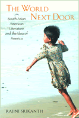

Literature that takes us beyond identity to empathy
Literature that takes us beyond identity to empathy


 Literature that takes us beyond identity to empathy
Literature that takes us beyond identity to empathy

|  |
The World Next DoorSouth Asian American Literature and the Idea of AmericaRajini Srikanthpaper EAN: 978-1-59213-081-8 (ISBN: 1-59213-081-X) |
Cultural Studies Book Award, Association for Asian American Studies, 2006
Outstanding Academic Title, Choice, 2005
"Rajini Srikanth's The World Next Door is a beautiful and thoughtful exploration of the imagination of South Asian America. We are laid bare by her perceptiveness. Desi texts for her are not just about themselves, but they are also a riposte against the stereotypes of citizenship that engulf us."
—Vijay Prashad, author of Karma of Brown Folk and Keeping Up with the Dow Joneses
This book grows out of the question, "At this particular moment of tense geopolitics and inter-linked economies, what insights can South Asian American writing offer us about living in the world?"
South Asian American literature, with its focus on the multiple geographies and histories of the global dispersal of South Asians, pulls back from a close-up view of the United States to reveal a wider landscape of many nations and peoples.
South Asian American poets, novelists, and playwrights depict the nation as simultaneously discrete and entwined with the urgencies of places as diverse as Bangladesh, Sri Lanka, India, Burma, Pakistan, and Trinidad. Drawing on the cosmopolitan sensibility of scholars like Anthony Appiah, Vinay Dharwadker, Martha Nussbaum, Bruce Robbins, and Amartya Sen, this book exhorts North American residents to envision connectedness with inhabitants of other lands. The world out there arrives next door.
Excerpt available at www.temple.edu/tempress
"A pioneering study of the unique contributions of South Asian American writers, both prominent and marginal, situating their vision locally, globally, and within 'the idea of America.' Asian American studies is enriched by Srikanth's timely engagement as much with literary representations of ethnicity, immigrant relocation, transnationalism, [and] sexuality, as with her astute concern with geopolitical dynamics and struggles for social justice in the world today."
—Ketu H. Katrak, Chair, Department of Asian American Studies, Professor of English and Comparative Literature, University of California, Irvine
"The introduction to this book is stunning: it brings the reader up to date with the tension that currently underlies the South Asian diaspora in the US.... In chapter after chapter, [Srikanth] shows how literature and activism strengthen each other.... Essential."
—Choice
"Among the extraordinary intellects and unique voices discussed by Professor Srikanth are Meena Alexander (Fault Lines), Michael Ondaatje (The English Patient), Muneer Ahmed ("Homeland Insecurities: Racial Violence the Day after September 11"). They are thinkers and writers and activists all at once steeped in a loosely shared cultural ethos and the bondlessness common among exiles from home."
—The Asian Reporter
"[T]his [is] a very worthwhile study."
—The Journal of American Studies
"[A]n exciting work... an important contribution to Asian American studies and American studies because it keenly analyzes and unpacks the ideological forces that inform and are challenged in South Asian American writing."
—American Studies
"Srikanth must be praised for the breadth, inclusiveness, and originality of her literary scholarship, her presentation of writers engaging with the most pressing political issues of this moment, her inclusion of performance art and activism alongside recognized literary masters and high theorists, her passion for wise and just reading, and the sheer intellectual exuberance of the literary world she has described."
—The Journal of Asian American Studies
Acknowledgments
1. Introduction
2. Transnational Homepages: Safety in Multiple Addresses
3. Desire, Gender, and Sexuality
4. Writing What You're Not: Limits and Possibilities of the Insider Imperative
5. Trust and Betrayal in the Idea of America
Notes
Bibliography
Index
 | Rajini Srikanth is Professor of English at the University of Massachusetts, Boston. She is the coeditor (with Sunaina Maira) of Contours of the Heart: South Asians Map North America and (with Lavina Dhingra Shankar) of A Part Yet Apart: South Asians in Asian America. |
Asian American Studies
American Studies
Literature and Drama
Asian American History and Culture, edited by K. Scott Wong, Linda Trinh V�, and Cathy Schlund-Vials.
Founded by Sucheng Chan in 1991, the Asian American History and Culture, series has sponsored innovative scholarship that has redefined, expanded, and advanced the field of Asian American studies while strengthening its links to related areas of scholarly inquiry and engaged critique. Like the field from which it emerged, the series remains rooted in the social sciences and humanities, encompassing multiple regions, formations, communities, and identities. Extending the vision of founding editor Sucheng Chan and emeriti editor Michael Omi and David Palumbo-Liu, series editors K. Scott Wong, Linda Trinh V�, and Cathy Schlund-Vials continue to develop a foundational collection that embodies a range of theoretical and methodological approaches to Asian American studies.
© 2015 Temple University. All Rights Reserved. This page: http://www.temple.edu/tempress/titles/1706_reg.html.